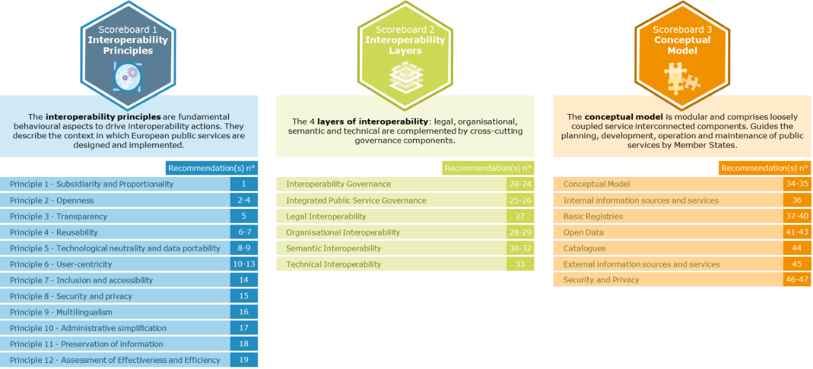
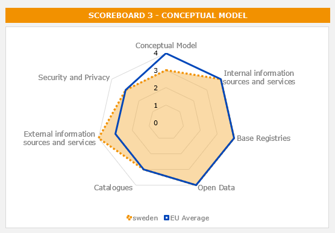
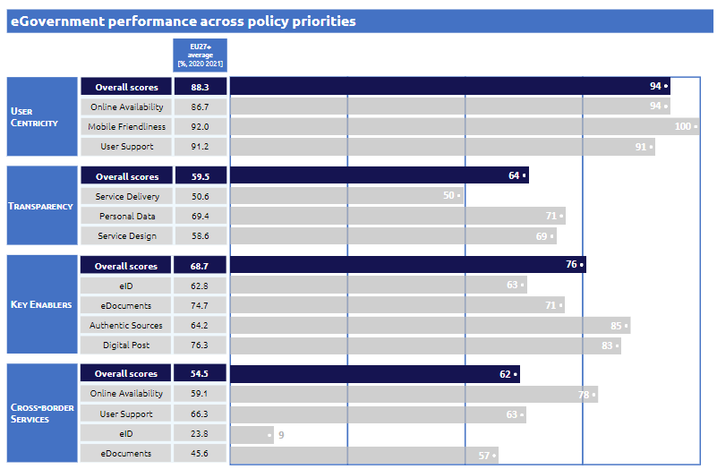

Digital Public Administration factsheet 2021
Sweden
Digital Public Administration factsheet 2022
Table of Contents
2 Digital Public Administration Highlights 10
3 Digital Public Administration Political Communications 13
4 Digital Public Administration Legislation 22
5 Digital Public Administration Governance 28
6 Digital Public Administration Infrastructure 33
7 Cross-border Digital Public Administration Services for Citizens and Businesses.. 44
Country
Profile
1
Country Profile
Digital Public Administration Indicators
The following graphs present data for the latest Digital Public Administration Indicators for Sweden compared to the EU average. Statistical indicators in this section reflect those of Eurostat at the time the Edition is being prepared.
Percentage of individuals using the internet for interacting with public authorities in Sweden | Percentage of individuals using the internet for obtaining information from public authorities in Sweden |
Percentage of individuals using the internet for downloading official forms from public authorities in Sweden | Percentage of individuals using the internet for sending filled forms to public authorities in Sweden |
| |
Interoperability State of Play
In 2017, the European Commission published the European Interoperability Framework (EIF) to give specific guidance on how to set up interoperable digital public services through a set of 47 recommendations. The picture below represents the three pillars of the EIF around which the EIF Monitoring Mechanism was built to evaluate the level of implementation of the EIF within the Member States. It is based on a set of 71 Key Performance Indicators (KPIs) clustered within the three main pillars of the EIF (Principles, Layers and Conceptual model), outlined below.

Source: European Interoperability Framework Monitoring Mechanism 2021

Source: European Interoperability Framework Monitoring Mechanism 2021

Source: European Interoperability Framework Monitoring Mechanism 2021

Source: European Interoperability Framework Monitoring Mechanism 2021
eGovernment State of Play
The graph below presents the main highlights of the latest eGovernment Benchmark Report, an assessment of eGovernment services in 36 countries: the 27 European Union Member States, as well as Iceland, Norway, Montenegro, the Republic of Serbia, Switzerland, Turkey, Albania and Macedonia (referred to as the EU27+).
The study evaluates online public services on four dimensions:
- User centricity: indicates the extent to which a service is provided online, its mobile friendliness and its usability (in terms of available online support and feedback mechanisms).
- Transparency: indicates the extent to which governments are transparent about (i) the process of service delivery, (ii) policy making and digital service design processes and (iii) the personal data processed in public services.
- Cross-border services: indicates the extent to which users of public services from another European country can use the online services.
- Key enablers: indicates the extent to which technical and organizational pre-conditions for eGovernment service provision are in place, such as electronic identification and authentic sources.
The 2022 report presents the biennial results, achieved over the past two years of measurement of all nine life events used to measure the above-mentioned key dimensions. More specifically, these life events are divided between seven ‘Citizen life events’ (Starting a small claim procedure, Moving, Owning a car, Health measured in 2021, and Career, Studying, Family life, measured in 2020) and two ‘Business life events’ (Regular Business Operations, measured in 2021, and Business start-up, measured in 2020).

Source: eGovernment Benchmark Report 2022 Country Factsheets

Digital Public Administration Highlights
2
Digital Public Administration Highlights
| Digital Public Administration Political Communications |

In October 2021, the government has adopted the Swedish data strategy, aimed at facilitating data sharing.
In 2021, the Swedish government asked the Swedish Companies Registration Office (Bolagsverket), the Swedish Employment Service (Arbetsförmedlingen), DIGG and the Swedish Tax Agency (Skatteverket) to provide a guide for public administration on how to use AI, a trust model for using automated processes and decisions with the support of AI, a project library for AI projects in public administration and starting up a common AI-infrastructure.
With regards to data exchange, in 2022, the Swedish Companies Registration Office, together with the cooperating authorities, will work out a roadmap that extends to 2027 with the aim of establishing the Standard Business Reporting, a methodology for digital exchange of structured business information where the basis consists of financial information.
In terms of Interoperable Data Exchange, the implementation of two new government initiatives is foreseen for 2022, with a view to establishing a national framework for basic data in public administration and a digital infrastructure for information exchange.
| Digital Public Administration Legislation |

No recent major update has been identified in this field to date.
| Digital Public Administration Governance |

The Agency for Digital Government (DIGG) received new specific funds from the Swedish government within the budget bill for 2021 and 2022, for the growth of a common public sector digital infrastructure.
The eCollaboration Programme (eSamverkansprogrammet) that focuses on developing digital solutions and promote interoperability counted 35 government agencies by the end of 2021.
Digital Public Administration Infrastructure |
Since June 2021, the JobTech Development platform that brings together actors operating within or in relation to the Swedish labour market to collaborate on open data, connected application programming interfaces (APIs) and complementary operational support system (OSS) projects, will also coordinate a cross-functional governmental assignment to develop a data infrastructure for skill-supply and lifelong learning.
A new version of the Framework for National Basic Data in Public Administration is foreseen for 2022.
A first beta version of the infrastructure minaombud.se is planned to be launched in spring 2022 to companies in a few affiliated municipalities / authorities. Mina ombud allows companies and people to create, sign, delete and view powers of attorney. The infrastructure also allows external eServices to connect so that representatives can act in eServices online for someone else, e.g. filling out e-declarations or e-applications.
Since March 2022, it is possible to connect to the Infrastructure for secure digital communication developed and operated by Inera AB, owned by SKL (Swedish Municipalities and County Councils). The infrastructure enables a secure exchange of information between authorities. The solution use Connecting Europe Facility (CEF) eDelivery building block, that are provided by the Agency for digital government (DIGG).

Digital Public Administration Political Communications
3
Digital Public Administration Political Communications
Specific political communications on digital public administration
Berlin Declaration on Digital Society and Value-Based Digital Government
In December 2020, the Swedish government signed the Berlin Declaration on Digital Society and Value-Based Digital Government, thus re-affirming its commitment – together with other EU Member States – to foster digital transformation in order to allow citizens and businesses to harness the benefits and opportunities offered by modern digital technologies. The Declaration aims to contribute to a value-based digital transformation by addressing and strengthening digital participation and digital inclusion in European societies.
- Digital skills: enhancing citizens’ digital skills, so as to enable them to actively participate in the digital transformation;
- Digital security: increasing digital security, and thus citizens’ trust and confidence in using digital services;
- Digital innovation: fostering digital innovation by creating the competitive conditions for the development and spread of new or improved products and services of value to people and businesses;
- Digital leadership: improving digital leadership, which entails better governance, but also measurement and follow-up activities; and
- Digital infrastructure: reinforcing the digital infrastructure, such as broadband, which is crucial for transmitting data.
Digital First – A Basic Principle
Putting the Citizen at the Centre - A Digital Services Strategy
The Swedish government strategy for collaborative digital services in government administration, ‘Putting the Citizen at the Centre’, was launched in December 2012. This strategy describes how the Swedish government plans to further strengthen the ability of government agencies to work together in delivering digital services. More common digital services in the daily lives of both citizens and businesses have been further simplified. These digital services shall be developed in a user-centric way: simple, secure to use and easily accessible to everyone. Innovation has been enhanced by making it easier to find and use reusable public information and digital services with interfaces that can be operated by other systems. The publication of public sector information on the internet and the use of social media have promoted both transparency and citizen involvement. Quality and efficiency in government administration have been increased through standardised information management, better information security and digitised processes. Such internal efficiency in developing digital services must always be conditional on the protection of personal privacy and the need for confidentiality. The above-mentioned objectives have formed the basis of the Swedish government’s coordinated and overriding development of inter‑agency cross-sectorial projects.
Development for the Digital Age - A New Strategy for Local and Regional Governments
In 2019, the Swedish Association of Local Authorities and Regions (SALAR) adopted a new strategy for digital government, aiming to align efforts related to digital development in SALAR, the Swedish municipalities and regions, as well as in the SALAR groups Adda (formerly named SKL Kommentus) and Inera AB. The strategy is aligned with the Swedish framework for digital collaboration and the European Interoperability Framework (EIF).
National Strategy for Data
In October 2021, the government adopted a National Strategy for Data aiming to increase the amount of data that can be used for the development of, for example, artificial intelligence (AI) by facilitating data sharing. The EU wants to lead the data-driven society and the government’s ambition is to actively contribute to an internal market for data.
Interoperability
National Standardisation Strategy
The National Standardisation Strategy (Regeringens strategi för standardisering) was adopted in July 2018. The strategy identifies a number of Swedish strategic priorities from a national, European and international perspective, and describes how they should be addressed through an active Swedish standardisation policy.
In addition, sector-specific priorities are described. These priorities have been identified through a mapping activity and standardisation analysis of the government and other relevant authorities.
Interoperable Data Exchange
During the last years, the Swedish government has focused more on interoperability and standardisation, as demonstrated by the different government initiatives for standardised and interoperable information and data exchange.
More specifically, two government initiatives were launched in May 2018, focusing on establishing the foundation for a more standardised and interoperable national approach to base registries and information exchange. Several key stakeholders were involved in the initiatives, including some of the larger government agencies and the Agency for Digital Government (DIGG), which had the responsibility to coordinate work.
The final reports for the initiatives were submitted in 2019. In line with the proposals in the reports, two new government initiatives were started at the end of 2019 with a view to establishing a national framework for basic data in public administration and a digital infrastructure for information exchange. A long-term plan to that end was defined in 2020 and the first deliverables based on this plan were available in 2021. The work continues in 2022.
Swedish Framework for Digital Collaboration
The Swedish Framework for Digital Collaboration (i.e. the Swedish version of the EIF) aims to help all public and publicly funded organisations to navigate in the same direction and thereby be able to exchange information effectively. It was developed by several government agencies in a collaboration programme called eSam and is now managed by the DIGG.
Standard Business Reporting
The Standard Business Reporting (SBR) is a methodology for digital exchange of structured business information whose basis consists of financial information. That way, the SBR, based on open standards to increase the availability of business data, creates business value through digitalised financial information.
In 2022, the possibility of setting up a regulatory sandbox will also be explored with the aim of testing new possibilities to increase automated and digitalised information exchange between companies and authorities.
Key enablers
Access to public information
Initiative for Increasing Individuals’ Insight of and Control over Personal Information
In 2020, the Swedish government initiated an assignment aimed at increasing individuals’ insight of and possible control over information about them available within public administration organisations. This mission was assigned as joint effort to the Swedish Employment Service, the Swedish eHealth Agency, the DIGG and the Swedish Tax Agency. It includes the development of a conceptual solution that can be implemented as a common digital infrastructure within public administrations, and which can be further developed to also connect with private actors’ digital infrastructure and services. The final report was delivered in June 2021.
The conceptual work has then continued within new government assignments, although not as a main focus but rather as an architectural component. Technical solutions are headed by the Swedish Employment Service. Furthermore, the Norwegian Digitalisation Agency received an identical assignment from the Norwegian government and representatives from the DIGG have continuous access to the advancements made after having been invited to participate in an advisory capacity.
eID and Trust Services
Cross-border Digital Services Programme
The is a strategic initiative that aims to accelerate the digital transformation in the Nordic-Baltic region. Overall, the goal is to increase mobility and integration in the region through seamless access to digital services across borders. The initiative will add value to citizens, businesses and public authorities. A representative from the DIGG and the Ministry of Infrastructure participates in the Programme Committee. More specifically, the programme has the following goals:
- Building secure and trusted electronic identification (eID) interoperability;
- Promoting cross-border data exchange between authorities;
- Enabling digital services across borders; and
- Establishing an open funding mechanism (the CBDS Fund).
Several projects are working on, e.g., developing the Nordic-Baltic eID (NOBID), enabling cross‑border digital services, including for studying abroad, and carrying out pilots in mapping and testing evidence exchange under the Single Digital Gateway Regulation.
eID for Employees
The possibility to use employee eIdentifications in external services outside of the employee’s organisation has been introduced in form of an agreement on the business terms and technical requirements. One of the most important features is the possibility to use an organisation’s specific identifier instead of the Swedish person identity number. This pseudonym decreases the risk of threats against employees. Other requirements and LoA (Level of Assurance) classification are the same. This means that the same trustframwork “Tillitsramverket för Svensk E-legitimation” (Only minor differences compared with eIDAS implementing act 2015:1502) and framework for interoperability “Technical Specifications for the Swedish eID Framework” is used for both ordinary eID and eID for employees. Since this possibility was open recently, only a few actors have signed the contracts, but many more have shown interest to use it in the future.
Security aspects
National Cybersecurity Strategy
At the beginning of March 2019, seven government agencies with responsibilities in the field of cybersecurity also presented a Comprehensive Cybersecurity Action Plan 2019‑2020 to implement the strategy at the agency level. The action plan contained 77 of the most important measures that were scheduled to begin implementation in 2019. The Swedish Civil Contingencies Agency (MSB), together with the same seven government agencies, will release updated versions of the action plan annually up to 2022. The updated versions contain new measures to be initiated as well as an evaluation of the measures introduced starting in 2019. The latest update of the Comprehensive Cybersecurity Action Plan was released and made publicly available on 2 March 2021.
Interconnection of base registries
References to the Once-Only Principle
Two government initiatives were launched in May 2018, focussing on establishing the foundation for a more standardised and interoperable national approach to base registries and information exchange. Several key stakeholders were involved, including some of the larger government agencies and the DIGG, which had the responsibility to coordinate the work.
The final reports for these initiatives were submitted in 2019. As envisioned in the reports, two new government initiatives were launched at the end of the same year with the aim of establishing a basic data national framework in public administration and a common digital management infrastructure for information exchange, for which an interim report was published in 2021. The two initiatives will be implemented in 2022.
Furthermore, a number of Swedish authorities, mainly the Swedish Companies Registration Office, the Swedish Tax Agency and the Stockholm University, participated in the European large-scale pilot projects Once-Only Principle (OOP) and Digital Europe For All (DE4A), both exploring the OOP prior to the introduction of the Single Digital Gateway Regulation.
eProcurement
Guidance from Central Government Authorities
The National Agency for Public Procurement provides guidance on eProcurement, eCommerce, the usage of dynamic purchasing systems and the sustainability analysis. The adopted method allows government agencies to focus their sustainability efforts on high impact categories.
The DIGG provides guidance on eProcurement and the use of the Peppol infrastructure and standards for post-award messages. The DIGG is the Swedish Peppol authority, leading the work on the national Peppol infrastructure and offering support primarily to service providers within Peppol but also to end users, like suppliers from the private sector and buyers in the public sector.
Domain-specific political communications
Vision for eHealth 2025
Digitisation offers great opportunities for the future of social services, health and medical care. Modern information and communication technologies (ICT) can make it easier for individuals to be involved in their own health and social care, support contact between individuals and service providers, and provide more efficient support systems for staff at service providers.
A strategy for eHealth for the period of 2020–2022 has complemented the vision. The purpose of the strategy is to determine how the joint work of the government and SALAR should be designed and prioritised. The priorities identified are: (i) people awareness and involvement; (ii) safe and secure information; (iii) knowledge; (iv) digital transformation; and (v) collaboration. The government and SALAR will also work together on the legal framework and the consistent use of terminology and standards.
Digitalisation of the Judiciary
Digitalisation can contribute to a judicial system which is well-functioning, efficient, based on rule of law and trusted by the people. Based on the Ordinance (2019:1283) on the Digitalisation of the Judiciary, authorities in the judicial system should accelerate the digital exchange of information and at the same time strengthen their digital government capability. In light of this, judicial authorities have been commissioned to jointly develop methods for managing criminal cases focusing on efficiency and to examine how to offer crime victims a better digital response.
In order to strengthen coordination, the government established a Council for the Digitalisation of the Judiciary, consisting of representatives from the law enforcement agencies. The Council held its first meeting in September 2020.
Emerging technologies
Artificial Intelligence (AI)
Declaration on AI in the Nordic-Baltic Region
- Improving opportunities for skills development with the goal of enabling more authorities, companies and organisations to use AI;
- Enhancing access to data for AI to be used for better service to citizens and businesses in the region;
- Developing ethical and transparent guidelines, standards, principles and values to guide when and how AI applications should be used;
- Ensuring that infrastructure, hardware, software and data, all of which are central to the use of AI, are based on standards, enabling interoperability, privacy, security, trust, good usability and portability;
- Ensuring that AI gets a prominent place in the European discussion and implementation of initiatives within the framework of the Digital Single Market;
- Avoiding unnecessary regulation in the area, which is under rapid development; and
- Utilising the structure of the Nordic Council of Ministers to facilitate the collaboration in relevant policy areas.
Government Assignment to Promote Public Administration’s Ability to Use AI
In 2021, the Swedish government gave an assignment to the four government agencies that work with AI the most, the Swedish Companies Registration Office (Bolagsverket), the Swedish Employment Service (Arbetsförmedlingen), the DIGG and the Swedish Tax Agency (Skatteverket). The expected result from the assignment is that the agencies should provide (i) a guide for public administration on how to use AI; (ii) a trust model for using automated processes and decisions with the support of AI; (iii) a project library for AI projects in public administration; and (iv) the start-up of a common AI infrastructure.
National Approach to Artificial Intelligence
In November 2020, the Swedish eHealth Agency published its report ‘Artificial Intelligence and eHealth’ (Artificiell intelligens och e-hälsa). In this report the Agency discusses possibilities and challenges, national and international investments in AI, legal and ethical aspects, and competence needs, specifically in the healthcare sector.
Distributed ledger technologies
European Blockchain Partnership
Proof of Concept using Distributed Ledger Technology/Blockchain
The Swedish government gave the Swedish Companies Registration Office (Bolagsverket) an assignment in 2021 to develop a proof of concept using the blockchain or the distributed ledger technology (DLT) with the purpose of giving companies more control over their data and more opportunities to share data with each other. The Office will also conduct an analysis on how blockchain is being used in other areas than for company data.
Big data
No political communication was adopted in this field to date.
Cloud computing
No political communication was adopted in this field to date.
Internet of Things (IoT)
IoT Sverige
High-performance computing
No political communication was adopted in this field to date.
High-speed broadband connectivity
Letter of Intent on the Development of 5G in the Nordic Region
Other emerging technologies
Use of New Technologies in Public Sector
The Swedish Mapping, Cadastral and Land Registration Authority (Lantmäteriet) and the DIGG jointly carried out a government assignment to test new technology for automation in public administration. The goal of the assignment was to explore how the public sector’s processes and routines can be automated while maintaining or increasing quality and transparency behind decision-making.
The result, outlined in the December 2020 report, is a trust model for automation in public administration aimed at maintaining the trust in the public administration. It is based on transparency and understanding to ensure trust and confidence. The concept was tested at a function of the Land Registry but is generic and intended for use in the entire public sector. The findings of the report are now being used in the above‑mentioned assignment to promote public administration’s ability to use AI (see Section 3.5.1).

Digital Public Administration Legislation
4
Digital Public Administration Legislation
Specific legislation on digital public administration
Administrative Procedure Act
Since 2018 Sweden has an updated Administrative Procedure Act (Förvaltningslag). The law is significantly more technology-independent than its previous equivalent and welcomes digital communication.
Interoperability
Set-up of Standards and Specifications for the Health and Social Care System
To improve interoperability within the healthcare and social service system, the Swedish eHealth Agency is working with an online catalogue of eHealth specifications. The catalogue furthers the vision to eliminate ambiguity when systems, professionals and organisations exchange information. Harmonised and reusable specifications – and a shared commitment to ensure their widespread adoption – are fundamental to achieve interoperability.
Finally, the National Board of Health and Welfare has investigated how and to what extent different types of AI solutions are being applied within the healthcare system.
Key enablers
Initiative for Providing Legal Support to Public Sector Actors regarding Digitalisation
In 2020, the Swedish government assigned the DIGG the responsibility for establishing processes and capacity for providing legal support to public administrations in issues related to digitalisation and the emergence of a common public sector digital infrastructure. By developing forms for spreading information and knowledge about legislation related to digitalisation in an easily accessible manner, the aim is to further increase public administration organisations’ capabilities to address future challenges of digitalisation.
Access to public information
Freedom of the Press Act
In 1766, Sweden became the first country in the world to introduce legislation on freedom of information with the Freedom of the Press Act. This act was reviewed in 1949 and was last amended on 1 January 2011. Chapter 2 of the act specifies that “every Swedish subject shall have free access to official documents”. Public authorities shall respond speedily to requests for official documents. Requests can be in any form and anonymous. This is known as the principle of public access to official records. Each agency is required to keep a register of all official documents and most indices should be publicly available. An effort is currently being made to make the registers available electronically. Decisions by public authorities to deny access to official documents may be appealed. Complaints can also be lodged to the Parliamentary Ombudsman, who can investigate and issue non-binding decisions.
Act on Public Access to Information and Secrecy
The Act (2009:400) on Public Access to Information and Secrecy contains exceptions to the principle of public access to official records in the form of provisions on confidentiality and non-disclosure of certain public documents.
Act on Accessibility of Digital Public Services
The EU Web Accessibility Directive (2016/2102) was transposed in Sweden by the Act (2018:1937) on Accessibility of Digital Public Services and the accompanying Ordinance (2018:1938) on Accessibility of Digital Public Services, assigning regulatory rights to the DIGG. The DIGG published the required regulations MDFFS 2019:2 in May 2019. The regulations establish that the accessibility of websites and mobile applications of public sector bodies in Sweden shall conform to the requirements set forth in Article 4 of the Directive.
Act on the Reuse of Public Administration Documents
On 1 July 2010 Sweden transposed Directive 2003/98/EC on the re-use of public sector information in a new piece of legislation, i.e. the Act (2010:566) on the Reuse of Public Administration Documents. This law specifically aims to promote the development of an information market by facilitating reuse by individuals of documents supplied by the authorities on conditions that they cannot be used to restrict competition. As of February 2022, legislative work was ongoing with the aim of transposing the amendments to the Open Data Directive (2019/1024) into the domestic legislation, and further increasing the availability and reuse of information from the public sector, in particular in the form of open data.
eID and Trust Services
eIDAS Regulation
Sweden complies with Regulation 910/2014 on electronic identification and trust services for electronic transactions in the internal market (eIDAS Regulation) and has notified one Swedish eID scheme in accordance with the Regulation. After prenotification and peer-review, the Cooperation Network adopted a positive opinion on two additional eID schemes.
The Act (2016:561) on Supplementing Provisions to the eIDAS Regulation contains several provisions regarding, for example, enforcement measures.
Act on the Systems of Choice for Electronic Identification Services
The Act (2013:311) on the Systems of Choice for Electronic Identification Services aims to allow the user to choose between a variety of privately issued eIDs approved by the DIGG when interacting with the authorities.
Ordinance on the Common Public Sector Infrastructure for Secure Electronic Mail
According to the Ordinance on the Common Public Sector Infrastructure for Secure Electronic Mail (SFS 2018:357), the DIGG should provide a common public sector infrastructure which makes it possible for public sector bodies to send secure electronic mail to individuals.
Security aspects
Protective Security Act
The Protective Security Act protects activities of importance for Sweden’s national security and also encompasses activities covered by an international binding security commitment for Sweden. It emphasises that security-sensitive activities can be performed by both government agencies and private operators. Also, in addition to regulating security for the handling of classified information, it emphasises the need for protection of other security-sensitive domains, such as essential information systems.
Transposition of the NIS Directive
Directive 2016/1148 concerning measures for a high common level of security of network and information systems across the Union (NIS Directive) was transposed into Swedish law on 1 August 2018, through SFS 2018:1174. Operators of essential services and digital services became subject to information security requirements in accordance with the NIS Directive.
Data Protection Act
In many areas of administration, special registry laws exist to supplement the provisions of the General Data Protection Regulation (GDPR) and the Swedish law (2018:218) complementing the GDPR.
Interconnection of base registries
Population Registration Act
The Population Registration Act describes when and where a person has to be registered, when a change of address has to be reported and how a population registration decision may be appealed. The act is supplemented by a Population Registration Ordinance, which includes rules prescribing that certain authorities should furnish the population registry with information concerning addresses. Together with the Civil Registration Act, the Population Registration Act regulates the Population Registry.
Civil Registration Act
The Civil Registration Act describes which registries must be kept, the purpose of the registries, what they may contain and how users can search for information within their systems. The act is supplemented by an Ordinance on Population Registries, stating, among other things, when information should be transferred between the different registries. Together with the Population Registration Act, the Civil Registration Act regulates the Population Registry.
Road Traffic Registration Act
The Act (2019:370) on Vehicle Registration and Use contains provisions on the registration of motor vehicles and trailers in the Road Traffic Registry. The information that must be registered in the Road Traffic Registry is specified in the Act (2019: 369) on Road Traffic Data and the regulations that have been issued in connection with the act. The different pieces of legislation contain details on items such as vehicle registration, registration fees, data on driver’s license registration and the right to request information.
Real Property Registry Act
The Real Property Registry was established by the Act (2000:224) on the Real Property Registry. The act includes information on the purpose and content of the registry, the agency which enters the information into the registry, the privacy management, the disclosure of records for automatic processing, the fees, etc.
The Swedish Mapping, Cadastral and Land Registration Authority publishes the information contained in the registry and makes it available to everyone. The information within the Real Property Registry is open for reuse for certain purposes. Organisations can apply to get access to information from the registry if the purpose for reusing the information is legitimate. The information in the Real Property Registry is available in standardised and interoperable formats, according to the INSPIRE Directive.
Tax Registration Act
The Act (1980:343) on Tax Registration defines the content and functions of the Tax Registry under the agency of the Ministry of Finance. It also provides details regarding access to data in the Tax Registry.
Companies Act
The Act (2005:551) on Companies defines the registration and running of limited liability companies. The Swedish Companies Registration Office is responsible for the Swedish Companies Registry under the agency of the Ministry of Trade and Industry.
eProcurement
Act on Public Procurement
Public procurement is mainly governed by the Swedish Act (2016:1145) on Public Procurement, which is largely based on the EU Directive on public procurement (2014/24/EU).
eInvoicing Legislation
In Sweden, the responsible entity in the field of eInvoicing is the Ministry of Infrastructure. As stated in the legislation (Ordinance for Accounting, 2000; Ordinance for Electronic Information Exchange, 2003) eInvoicing has been mandatory in Sweden since 2008 for central government agencies. According to the accompanying regulations all central government authorities must be registered in the Peppol infrastructure for receiving eInvoices and must also be able to send eInvoices in Peppol.
All public procurements initiated after 1 April 2019 must be invoiced electronically (Law on Electronic Invoices as a Result of Public Procurement, 2018). The law applies to all public procurements above and below the set thresholds, and includes direct procurements. All suppliers to the public sector must send eInvoices, and buyers must be able to receive and process eInvoices. eInvoices must comply with the European Standard, EN 16931, if no other standard is agreed upon. The DIGG recommends the use of Peppol BIS Billing 3, which is an implementation (CIUS) of the European Standard. A supplier which does not send invoices that meet the requirements of the law may be fined.
Public Procurement Statistics
New legislation on public procurement statistics (Lag om upphandlingsstatistik) entered into force in 2020. The legislation aims to ensure public access to procurement data. The National Agency for Public Procurement is responsible for the governance of a national statistical database for public procurement.
Domain-specific legislation
eJustice Legislation
In May 2018, amendments were made in the field of eJustice to allow the use of electronic signatures when signing court decisions, and applying for both summary proceedings related to an order to pay and summary proceedings for assistance. Furthermore, electronic signatures may also be used when accepting orders for summary punishment and breach-of-regulations fines, which, among other things, enables a more digital management of fines for traffic violations.
In November 2020, changes to the legislation were passed through the act (2020:918) amending the Swedish Code of Judicial Procedure in order to further enable and facilitate digital communication in court proceedings. The changes provide, among other things, that as of 2021 Swedish general courts will accept applications for summons and powers of attorney that are signed electronically using an advanced electronic signature. Measures were also taken to reduce the need for paper copies during court proceedings.
Legislation on the National Medication List
In June 2018 the Swedish Parliament approved a proposal from the government for new legislation on the National Medication List. The National Medication List creates a single source for data on a patient’s prescribed medicines and other products while safeguarding the patient’s right to privacy. The data may, for example, be used by patients, pharmacies and healthcare providers, under certain circumstances.
The new act (SFS 2018:1212) on the National Medication List entered into force on 1 May 2021, with a transition period of two years. During the transition period, healthcare providers must adapt their systems to the new legislation. Existing information technology (IT) services and systems will be phased out after the transition period but will continue being in production, in parallel with the new IT services that have been developed for the new list.
Registering data in the National Medication List will be mandatory for pharmacies and prescribers of medicines. Patients can block access to certain information but not opt‑out from the registration. With the introduction of the National Medication List, information will be stored for five years.
Act on Electronic Commerce and other Information Society Services
Adopted in 2002, the Act on Electronic Commerce and other Information Society Services transposed Directive 2000/31/EC on certain legal aspects of information society services, in particular electronic commerce (Directive on electronic commerce). It stipulates the obligations of service providers and regulates the treatment of information submitted online.
Emerging technologies
Artificial Intelligence (AI)
No legislation was adopted in this field to date.
Distributed ledger technologies
No legislation was adopted in this field to date.
Big data
No legislation was adopted in this field to date.
Cloud computing
No legislation was adopted in this field to date.
Internet of Things (IoT)
No legislation was adopted in this field to date.
High-performance computing
No legislation was adopted in this field to date.
High-speed broadband connectivity
No legislation was adopted in this field to date.

Digital Public Administration Governance
5
Digital Public Administration Governance
National
Ministry of Infrastructure
In January 2019, the Ministry of Infrastructure was established. It is responsible for matters relating to infrastructure, digital policy, post and energy. The Ministry is supported by the Digital Society Division. The Minister specifically responsible for digital development is Mr. Khashayar Farmanbar, Minister for Energy and Digital Development.
Agency for Digital Government
In 2018, the Agency for Digital Government (DIGG) was established to serve as hub for the digitalisation of the public sector. The primary objective is to improve the coordination of public sector digitalisation and support it at the central, regional and local levels. The agency is also responsible, inter alia, for eIdentification, eInvoicing, digital post, web accessibility, digital infrastructure for information exchange, and promotion of access to and usability of public data. The DIGG is also the Swedish National Coordinator for the Single Digital Gateway, as defined in Article 28 of Regulation (EU) 2018/1724.
In the budget bill for 2021 and 2022, the Swedish government decided to set aside funds annually for the growth of a common public sector digital infrastructure. The funds are at the disposal of the DIGG and can be used by cooperating parties to intensify the work.
Swedish eHealth Agency
Swedish Civil Contingencies Agency
The Swedish Civil Contingencies Agency (MSB) is responsible for issues related to civil protection, public safety, emergency management and civil defence. The MSB’s responsibilities include supporting and coordinating Swedish cyber and information security, acting as the single point of contact (SPOC) for the NIS Directive as well as issuing regulations on cybersecurity.
The MSB provides extensive support for a systematic and risk-based information security management, partly through the website Informationssakerhet.se. The MSB is also assigned to receive reports of serious IT incidents from critical market operators (as part of the NIS Directive) as well as from governmental agencies. Based on these two kinds of reports the MSB publishes two summarising reports on a yearly basis. Furthermore, the MSB hosts the Swedish national Computer Security Incident Response Team (CSIRT), CERT-SE. For more information about CERT‑SE see Section 5.1.4.
Legal, Financial and Administrative Services Agency
The National Procurement Services, a department within the central government agency called Legal, Financial and Administrative Services Agency (Kammarkollegiet), procure and manage coordinated framework agreements for the public sector in the area of ICT. The Agency is mandated by the government to explore and develop ways of improving the use of electronic solutions and common standards in the public sector.
eCollaboration Programme
Government agencies that were members of the eGovernment delegation started a programme in 2015 to continue their collaboration in the digital field. The main focus of the eCollaboration Programme (eSamverkansprogrammet) is to cooperate in developing digital solutions and promote interoperability by using guidelines, sharing knowledge and best practices, and networking. The steering group is formed by the director‑generals of the member agencies. By the end of 2021, 35 government agencies had joined the eCollaboration Programme as members. The secretariat is hosted by the Swedish Pensions Agency.
Municipal Cooperation and Development
Local authorities have their own Collaboration for Cooperative Use, the purpose of which is to cooperate around business development and digital services, and to exchange best practices, that way speeding up the development of eGovernment in municipalities. Slightly more than one third of the Swedish municipalities have been collaborating for 15 years in more than 30 projects developed to identify, design and introduce common systems architectures, technical platforms and basic functions for digital services in municipalities. They also actively share knowledge around state-of-the-art topics regarding digitalisation and related change management.
Swedish Agency for Public Management
The Swedish Agency for Public Management (Statskontoret) is tasked with providing support to the government and to government bodies through analyses and evaluations of State and State-funded activities. Statskontoret sometimes conducts studies, upon the government’s request, in the field of digitalisation in order to help modernise public administration through the use of ICT.
Swedish Post and Telecom Authority
In brief, the relevant ordinance states that CERT-SE shall:
- Respond promptly when IT incidents occur by spreading information and, where needed, working on the coordination of measures, and assist in the work needed to remedy or alleviate the consequences of incidents;
- Cooperate with authorities that have specific tasks in the field of information security; and
- Act as Sweden’s point of contact for equivalent services in other countries, and develop cooperation and information exchanges with them.
CERT-SE is certified by the Trusted Introducer Service and fulfils the expectations relating to a national CSIRT as established in the NIS Directive.
National Centre for Cybersecurity
- Compile joint analyses and promote overall situational awareness regarding threats and vulnerabilities;
- Disseminate information between participating authorities and other actors; and
- Coordinate work in the event of cyberincidents, including cyberattacks.
Innovation Centre
Swedish Authority for Privacy Protection
The Swedish Authority for Privacy Protection is a supervisory authority under the GDPR and the Data Protection Directive. It also supplements and implements the Act (2018:218) on Data Protection.
Subnational (federal, regional and local)
Swedish Association of Local Authorities and Regions
Inera AB
Inera AB coordinates the development and management of joint digital solutions that will help to streamline regions and municipalities’ operations. Inera AB is a company owned by regions and municipalities, as well as SALAR.
Digital Public Administration Infrastructure
6
Digital Public Administration Infrastructure
Portals
National Portals
Strategic Initiative on Access to and Usability of Public Data
The Swedish government has assigned the DIGG the mission of promoting the public sector’s capability to make open data available and work with data-driven innovation. The DIGG is also responsible for establishing a national framework for basic data, i.e. public data that are considered important for many public actors and for the society.
Moreover, the DIGG manages the Swedish data portal, dataportal.se, explained below, with a view to providing a national infrastructure which increases access to public data. During 2021, the DIGG established a formal organisation for the Swedish data portal responsible for the development and support of increased access to open data and data-driven innovation. In order to support public actors in making data available for reuse, the DIGG also provides methodological support and guidelines.
Government Portal
The website has four main sections:
- Government and government offices, offering up-to-date information listed by Ministry, Minister and subject area;
- Government polices, providing an overview of the policies applicable in Sweden and related EU policies;
- Publications, containing all information, materials and publications issued in English or other foreign languages (along with an ordering service); and
- How Sweden is governed, focussing on the context around the work of the government and the government offices. Decision-making processes, the EU and other matters are described and exemplified.
Swedish Open Data Portal
Since September 2018, the DIGG has been responsible for the management and development of the Swedish Open Data Portal, dataportal.se. In 2020, the portal was formally launched after a period in a beta version. At the same time, the older and preceding data portal oppnadata.se was closed. The dataportal.se portal aims to provide easy access not only to data resources from both private and public sector organisations, but also to specifications and terminologies important for making data available in a standardised and structured manner. Data providers can also find support for the process of making data available on the data portal. Furthermore, measures have been introduced to publish open data and conduct open data-driven innovation through knowledge sharing and an online community. All data on dataportal.se are also made available on the European Data Portal.
Swedish Geodata Portal
The Swedish Geodata Portal (Geodataportalen) is a national registry for spatial data services that enables users to search, view and download data. The portal is hosted by the Swedish Mapping, Cadastral and Land Registration Authority (Lantmäteriet) in its role as national coordinator for the Swedish spatial data infrastructure. The Lantmäteriet also provides information on the national geodata strategy, the Swedish spatial data sharing model and the geodata advisory board, as well as tutorials and other initiatives. Complemented by the Swedish Open Data Portal (Sveriges data portal), Geodataportalen is, in turn, the access point for the Inspire Geoportal operated by the European Commission.
Openaid.se Portal
Openaid.se is a website about Swedish development assistance built on open government data from all authorities that handle funds within the Swedish government’s Expenditure Area 7 – International Development Cooperation. In other words, data from different sources are collected in one single site with the purpose of making this information accessible for everyone who is interested to find out when, to whom and for what purpose Swedish development assistance funds have been allocated – and what the results have been. The idea is also to open up a debate and dialogue on development assistance and its results.
The Swedish International Development Cooperation Agency (Sida) has developed Openaid on behalf of the Ministry of Foreign Affairs, within the context of the transparency guarantee that was established in 2010. The guarantee means that public documents and information about Swedish development assistance are actively made available on the web. On 30 September 2020, a new updated version of openaid.se was launched.
Sida publishes open data on Openaid according to the International Aid Transparency Initiative (IATI) standard.
Verksamt.se Portal: the Swedish Business Link to Government
The verksamt.se portal serves as a comprehensive single-entry point for entrepreneurs and enterprises to access relevant and official eServices and information from many public authorities. The portal is managed in collaboration between the authorities that provide services to entrepreneurs. In detail, the Swedish Companies Registration Office (Bolagsverket) is responsible for the technical operation and the Swedish Agency for Economic and Regional Growth (Tillväxtverket) for maintaining the editorial content.
The portal provides guidance and information about starting and running a business, including eServices for the formal registration in the Business Registry and the tax registration. It also includes interactive checklists, general information and inspiration for many lines of businesses. During the pandemic, it has been a central point for information about all the measures relevant for businesses.
Currently, a new modern digital platform for verksamt.se is being developed to support the creation of a digital ecosystem enabling more, better and easier information and eServices.
Läkemedelskollen: the Citizens Portal for Medicine Checks
Läkemedelskollen is the portal the Swedish eHealth Agency provides for citizens over 18, who, with an eID, can access the information stored electronically in the registers for which the Agency is responsible. These registers are the National Medication List and the high-cost protection database. An additional register in the portal is the ePrescription for animals, which however is not included in the National Medication List.
Portal for Business Taxonomies
The website taxonomier.se publishes the taxonomies developed within the framework of the Swedish Companies Registration Office’s government assignments to (i) introduce a service for submitting financial information regarding annual reports, etc. (registration number: N2016/04957/SUN); and (ii) develop a service for digital submission of annual reports, etc. for all types of companies (registration number: N2018/02033/FF). Taxonomier.se will serve as a portal to provide guidance and information about taxonomies to providers of SBR-compatible software. For more information on SBR, see Section 6.3.
National Portal for Application to Higher Education
Administered by the Swedish Council for Higher Education (UHR), the national portal Antagning.se offers a single point of contact for applying to all higher education courses and programmes at the first and second cycle levels. The portal also contains information about application rules and procedures, important dates, and guidance for understanding how to interpret and handle different grading systems. The UHR also administers the international portal Universityadmissions.se, where international students can apply for admission to courses and programmes offered in English.
Minpension.se: a National Portal for Pension Summary
1177.se: the National Portal for Healthcare Guidance and eServices
Mina Ombud
Mina Ombud is a Swedish national infrastructure for secure and digital management of powers of attorney currently under development by the Swedish Companies Registration Office, in close cooperation with the Swedish Tax Agency and the DIGG. The need for a digital management of powers of attorney has increased, leading to separate similar initiatives over the country. So, in order to save time and budget to the benefit of society, Mina Ombud is the national infrastructure meant to handle digital powers of attorney for the entire country.
The infrastructure provides a national web portal, minaombud.se, which allows companies and people to create, sign, delete and view powers of attorney. The infrastructure also allows external eServices to connect so that representatives can act in eServices online on behalf of someone else, e.g. filling out eDeclarations or eApplications. The national infrastructure is limited to powers of attorney and does not include other kinds of powers of representation. Those digital powers of attorney will be valid for governmental and municipal agencies, but also with private actors in the long run.
Jobtech Development: a Collaboration Platform
JobTech Development is a platform initiated in 2018 bringing together actors operating within or in relation to the Swedish labour market with a view to collaborating on open data, connected APIs and complementary operational support system (OSS) projects. The platform is orchestrated by the Swedish Public Employment Service (SPES), a Swedish national government agency responsible for enabling the matching between jobseekers and employers on the labour market. Since June 2021, Jobtech also coordinates a cross‑functional governmental assignment to develop a data infrastructure for skill supply and lifelong learning.
Efterlevandeguiden.se
Efterlevandeguiden is a website with aggregated information created in 2015. It provides information for those who recently lost someone close and explains what to do and when, and whom to contact. It is a collaboration between three government agencies, the Swedish Social Insurance Agency, the Swedish Pension Agency and the Swedish Tax Agency.
Subnational Portals
Platform for Cooperative Use
Dela Digitalt, the platform for cooperative use of ideas is provided by SALAR in order for the public sector to exchange knowledge regarding development, methods and tools. It was launched in 2016 with the purpose of contributing to a more efficient development process in the public sector.
Data Labs for Innovation
The Swedish Innovation Agency, Vinnova, is currently funding eleven data labs focussing on gathering actors, and sharing best practices and tools with the purpose of increasing and improving the conditions for data-driven innovation. The labs, run by both public and private organisations, are mainly domain-specific and hosted by the organisation in charge of data in each respective domain. Examples of labs are:
- The National Forest Data Lab (hosted by the Swedish Forest Agency);
- The Swedish Space Data Lab 2.0 (hosted by AI Sweden); and
- Ocean Data Factory Sweden (hosted by the Gothenburg University).
Networks
Swedish Government Secure Intranet
The Swedish Government Secure Intranet (SGSI) is an intranet service for secure communication between government agencies, and among EU Member States and EU bodies via TESTA, the European Community’s own private IP-based network for secure information exchange among the European public administrations. In other words, the SGSI has a wider function than that of being a national node to TESTA, as it is also used for secure communication between national users. The network is also expected to become increasingly important for national crisis communication among Swedish government agencies.
The SGSI is an IP service, a virtual private network which has no direct connection with the open internet. According to the security target in force, the SGSI is used by accredited government agencies. Accreditation implies that case sensitive information which has been classified according to the EU Council’s security regulations as ‘Restreint UE’ can be transferred to TESTA and to connected agencies.
Data Exchange
Secure Data Communication
The infrastructure for secure digital communication is developed and operated by Inera AB, owned by SALAR. Since March 2022 it is possible to connect to the infrastructure, which enables a safe exchange of information between authorities. The solution uses the Connecting Europe Facility (CEF) eDelivery building block, i.e. the architecture for safe transport of information between entities that is provided by the DIGG.
Common Public Sector Digital Infrastructure for Information Exchange
eID and Trust Services
Official Electronic ID Card
In 2005, the Swedish government introduced the ‘official’ eID card containing biometric data. The new ‘national identity card’ (nationellt identitetskort) is not compulsory and does not replace previous paper ID cards. It can be used as proof of identity and citizenship, and as a valid travel document within the Schengen area. The card complies with the International Civil Aviation Organisation (ICAO) standards for biometric travel documents; it is issued by passport offices and manufactured by the same supplier as the biometric passport. In addition to the contactless chip containing a digital picture of the holder, it also has a traditional chip, which may be used to securely access eGovernment services in the future.
Based on Regulation (EU) 2019/1157 of the European Parliament and of the Council, the security requirements for identity cards of Union citizens and residence documents include, e.g., fingerprint information.
Despite the fact that it can be read electronically, the card is not an eID that can be used in order to authenticate the user remotely. A study proposed to complement it with an eID according to eIDAS Level of Assurance High, but no decision has been made yet.
Non-Official eID Cards and Software-based eIDs (eLegitimation)
The personal identity number is used as the identifier when the eID is used for an eService, while legal entities can have an organisational number as identifier. The same number can be used in certificates for authentication and signing. The certificates contain the name of the organisation and the organisational number, and may also include a URL. The contact person ordering organisational certificates must have an authorisation for this purpose from a person authorised to sign on behalf of his/her organisation.
Most actors in the public sector base their eServices on the SAML 2.0 standard, even though old eID schemes do not follow this standard. For this reason, most eServices rely on proxy identity providers (IdPs). This system has worked well but deviations from the standard in the implementation of proxy IdPs have become an obstacle for implementing cross-border authentications and for new suppliers that fulfil the standard.
eIDAS
Biometric Passports
eProcurement
eProcurement Virtual System
The central eProcurement authorities’ role consists in monitoring the supplied services and compliance with standards. In general, the Swedish government has not implemented a central electronic public procurement portal, as this is deliberately left up to private operators. Several privately owned and operated portals exist instead, some of which concentrate on public procurement.
Information on Coordinated Public Sector Framework Agreements
The National Procurement Services offer a website, avropa.se, that serves as an information database on the different framework agreements which were procured centrally by the National Procurement Services. The portal contains information on framework agreements available to national authorities. In the field of IT and telecom, framework agreements are also available to Swedish municipalities and regions. An agency can thus use the information portal to locate the necessary information on a framework agreement, whereas the procurement process is further handled by the agency itself, either by electronic or traditional means.
eInvoicing Infrastructure and Standard
The European eInvoicing standard, EN 16931, is mandatory according to the Law on Electronic Invoices as a Result of Public Procurement (2018), but the law permits agreements on the use of other formats. The DIGG recommends the use of Peppol BIS Billing 3, which is an implementation (CIUS) of EN 16931. According to the Ordinance for Electronic Information Exchange (2003), central government authorities must support Peppol BIS Billing 3, but can also support a few older invoice formats in existing agreements.
ePayment
eKrona Project
In order to increase the knowledge of the CBDC, since February 2020 the Riksbank has been running a proof of concept, the eKrona pilot, with a technical supplier (Accenture) to develop and test a platform based on distributed ledger and blockchain technology for an eKrona system in a limited test environment. The objective of the eKrona pilot is to learn more about the certain technology in particular and to investigate (technical, policy and legal) issues regarding an eKrona in general. The Riksbank ended the first phase of the proof of concept in the beginning of 2021 and has extended the agreement for one year to continue the development and evaluation of the platform.
Knowledge Management
Dela Digital: A Knowledge Sharing Platform for Municipalities and Regions
Dela Digital, an open source platform, was developed by SALAR with a view to providing a possibility to share knowledge to all Swedish municipalities and regions. Through its user-driven setup, personnel and organisations can share experiences, from e.g. development projects, change processes and developed tools, that can improve work and cooperation within the public administration.
Network Open Source and Data
In the Network Open Source and Data (NOSAD), public entities gather to share best practices and lessons learned through monthly workshops on subjects concerning innovation, open data and open source. In addition, they collaborate on community initiatives, such as a catalogue of open source software used within public services. The purpose is to inspire the public sector as to how to take the next step to promote innovation and maximize the effects of digitalisation using open data and open source. The network is organized by the Swedish Public Employment Service (Jobtech Development), the DIGG, SALAR and the Swedish Internet Foundation.
Digitalhjälpen: Increasing the Digital Competence among the Elderly
Particularly elderly persons face specific challenges to use the possibilities that digital services and tools offer, a matter that was made significantly acute by the 2020 COVID‑19 pandemic. In light of this, the Swedish government assigned the PTS a mission to conduct efforts to improve the ability of elderly people to use digital services and increase digital participation, thus lessening their social isolation.
As part of these efforts, the website Digitalhjälpen (‘The digital help’) was launched as a means to support the elderly. The site is composed of the following sections: (i) examples of digital services; (ii) support for increasing digital competence; and (iii) guides to use a number of common digital services.
Cross-border platforms
EUCARIS, EULIS, BRIS and Peppol
Large-Scale Pilots TOOP and DE4A
Electronic Exchange of Social Security Information
Nordic Smart Government and Business
The collaboration on Nordic Smart Government and Business (NSG&B) was initiated by the director-generals of the Nordic Business Registries in 2016. With the support from Nordic Innovation (the Nordic Council of Ministers), a strong Nordic collaboration was established. Since 2021, all Nordic tax authorities are involved and have a seat in the steering group, and an increasing number of other authorities are continuously joining.
About 2 million small and medium-sized enterprises (SMEs) operate in the Nordic region, accounting for more than 90% of all businesses and thus forming the cornerstone of Nordic societies and their future welfare. In general, the Nordic societies and businesses feature high levels of digital innovation, digital competence and application of digital services, which gives them a competitive advantage in the data economy. The vision of NSG&B is to create value for SMEs by making real-time business data accessible and usable for innovation and growth across the region, in an automatic, consent-based and secure manner.
National Contact Point for eHealth
The Swedish eHealth Agency (E-hälsomyndigheten) is the national contact point for eHealth (NCPeH) at EU level. At present the Swedish eHealth Agency is finalising the infrastructure that is needed to send ePrescriptions cross-border.
Base registries
Civil Registry
The Swedish Tax Agency (Skatteverket) is responsible for the Civil Registry.
Vehicle Registry
The Swedish Transport Agency (Transportstyrelsen) is responsible for the Vehicle Registry.
Business Registry
The Swedish Companies Registration Office (Bolagsverket) is the main authority responsible for registering and making available company information.
Land Registry
The Swedish Mapping, Cadastral and Land Registration Authority (Lantmäteriet) is responsible for the Land Registry.
Framework for National Basic Data in Public Administration
Two government initiatives were introduced in May 2018, focusing on establishing the foundation for a more standardised and interoperable national approach to base registries and information exchange. Several key stakeholders were involved, including some of the largest government agencies and the DIGG, which had the responsibility to coordinate work. The final reports were submitted in 2019. In line with the reports, at the end of the same year two new government assignments were given to the same stakeholders and government agencies, with the DIGG in the lead, to establish a common public sector digital infrastructure for information exchange and a framework for national basic data in public administration. The framework and the digital infrastructure were established during 2021; a new version of the framework will come in 2022. While new basic data domains are under exploration, three basic data domains are already being developed:
- Person: the Swedish Tax Agency (Skatteverket) is responsible for the Civil Registry;
- Companies: the Swedish Companies Registration Office (Bolagsverket) is responsible for registering and making available company information; and
- Real estate information and geographic information: the Swedish Mapping, Cadastral and Land Registration Authority (Lantmäteriet) is responsible for the basic data domain.
Emerging technologies
Artificial Intelligence (AI)
No infrastructure was reported in this field to date.
Distributed ledger technologies
No infrastructure was reported in this field to date.
Big data
No infrastructure was reported in this field to date.
Cloud computing
No infrastructure was reported in this field to date.
Internet of Things (IoT)
No infrastructure was reported in this field to date.
High-performance computing
National Super-computer Centre at Linköping University
Dardel Super-computer at the Royal Institute of Technology 2021
The KTH Royal Institute of Technology (KTH) has just signed a contract in 2021 for a new supercomputer. The system will be an HPE Cray EX supercomputer featuring AMD EPYC™ processors and AMD Instinct™ GPU accelerators. It will be housed in the PDC Center for High Performance Computing (PDC) at the KTH main campus in Stockholm. The Dardel supercomputer will be installed in two phases. The initial phase of the computer will provide SNIC users with more than 65,000 CPU cores for performing their research calculations. The second phase of Dardel, which consists of a GPU partition and is planned to be ready for use in early 2022.
The LUMI super-computer
The Government considers that the ongoing cooperation in the EuroHPC initiative contributes to European added value by enabling European researchers to access supercomputers capable of performing calculations on an ex-scale.
High-speed broadband connectivity
No infrastructure was reported in this field to date.

Cross-border
Digital Public Administration Services
7
Cross-border Digital Public Administration Services for Citizens and Businesses
Further to the information on national digital public services provided in the previous chapters, this final chapter presents an overview of the basic cross-border public services provided to citizens and businesses in other European countries. Your Europe is taken as reference, as it is the EU one-stop shop which aims to simplify the life of both citizens and businesses by avoiding unnecessary inconvenience and red tape in regard to ‘life and travel’, as well as ‘doing business’ abroad. In order to do so, Your Europe offers information on basic rights under EU law, but also on how these rights are implemented in each individual country (where information has been provided by the national authorities).
Please note that, in most cases, the EU rights described in Your Europe apply to all EU member countries plus Iceland, Liechtenstein and Norway, and sometimes to Switzerland. Information on Your Europe is provided by the relevant departments of the European Commission and complemented by content provided by the authorities of every country it covers. As the website consists of two sections - one for citizens and one for businesses, both managed by DG Internal Market, Industry, Entrepreneurship and SMEs (DG GROW) - below the main groups of services for each section are listed.
Life and Travel
For citizens, the following groups of services can be found on the website Your Europe:
- Travel (e.g. Documents needed for travelling in Europe);
- Work and retirement (e.g. Unemployment and Benefits);
- Vehicles (e.g. Registration);
- Residence formalities (e.g. Elections abroad);
- Education and youth (e.g. Researchers);
- Health (e.g. Medical Treatment abroad);
- Family (e.g. Couples);
- Consumers (e.g. Shopping).
Doing Business
Regarding businesses, the groups of services on the website Your Europe concern:
- Running a business (e.g. Developing a business);
- Taxation (e.g. Business tax);
- Selling in the EU (e.g. Public contracts);
- Human Resources (e.g. Employment contracts);
- Product requirements (e.g. Standards);
- Financing and Funding (e.g. Accounting);
- Dealing with Customers (e.g. Data protection).
The Digital Public Administration Factsheets
The factsheets present an overview of the state and progress of Digital Public Administration and Interoperability within European countries.
The factsheets are published on the Joinup platform, which is a joint initiative by the Directorate General for Informatics (DG DIGIT) and the Directorate General for Communications Networks, Content & Technology (DG CONNECT). This factsheet received valuable contribution from Ms. Emma Bohman and Ms. Culjak, Agency for Digital Government.
The Digital Public Administration factsheets are prepared for the European Commission by Wavestone.
An action supported by Interoperable Europe
Interoperable Europe will lead the process of achieving these goals and creating a reinforced interoperability policy that will work for everyone. The initiative is supported by the Digital Europe Programme.
Follow us
Interoperable Europe